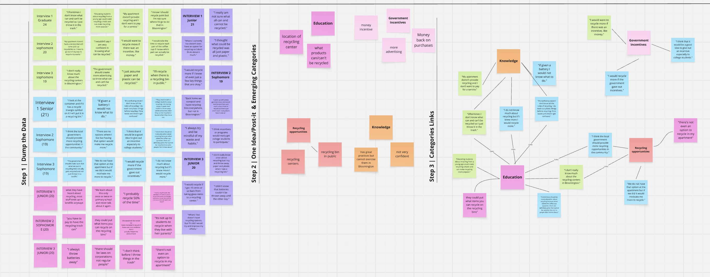
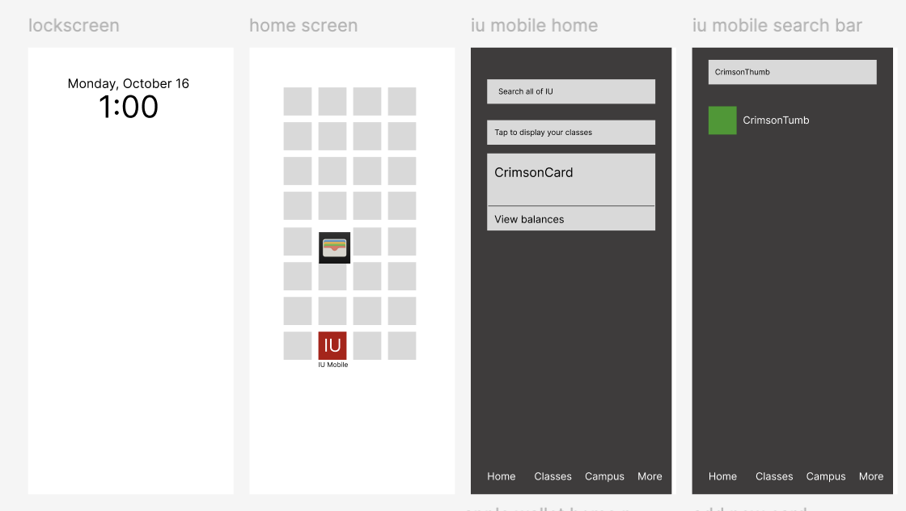
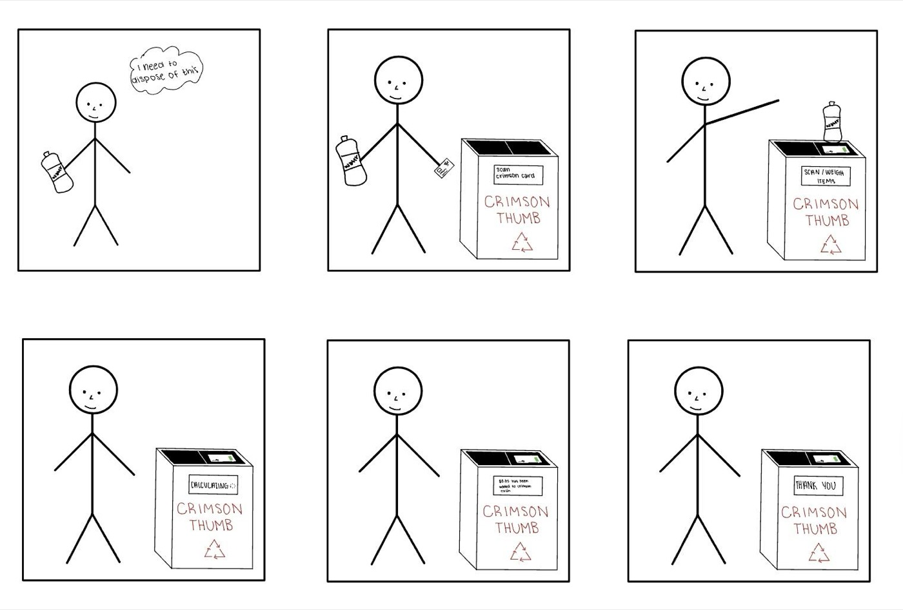
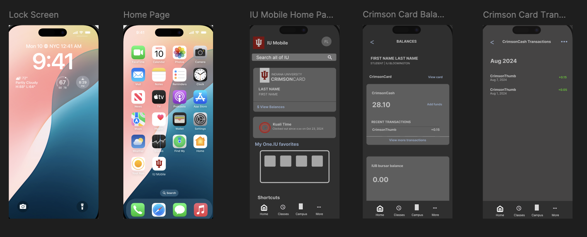
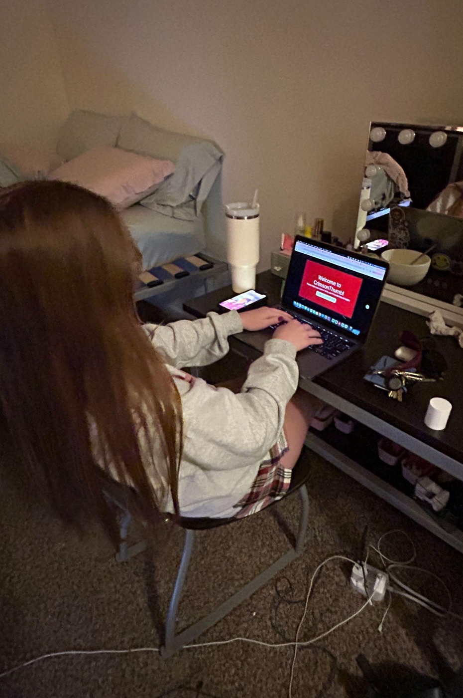
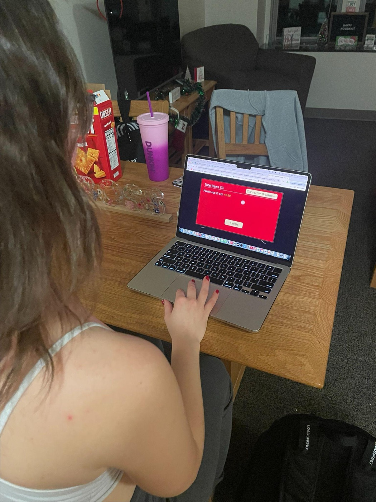
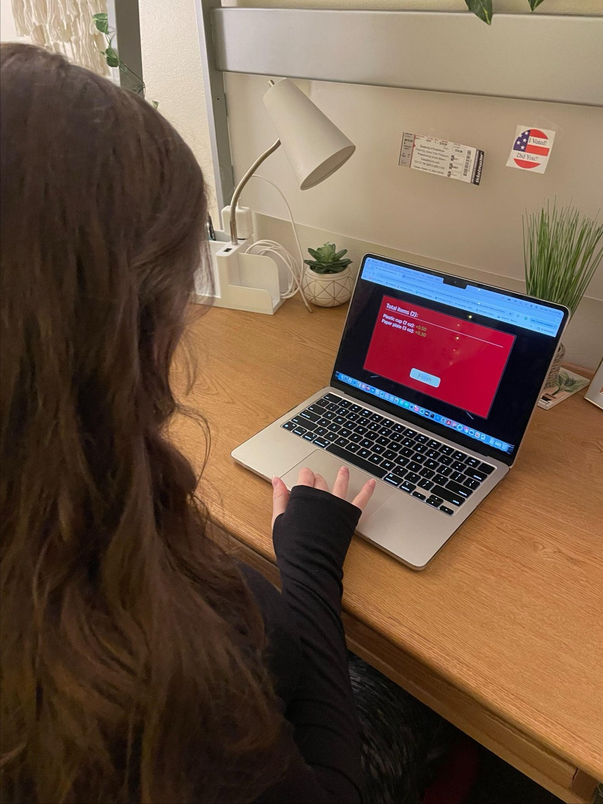
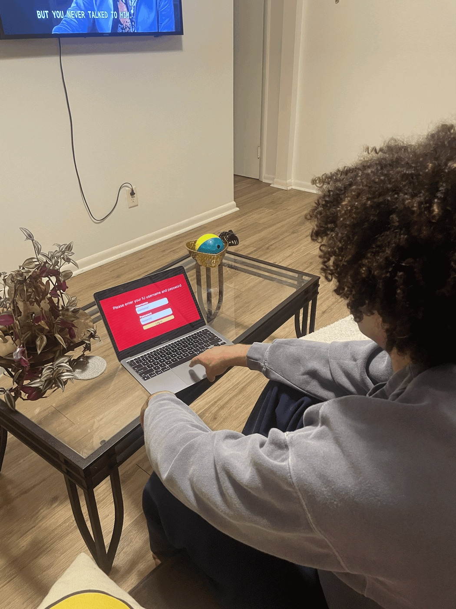
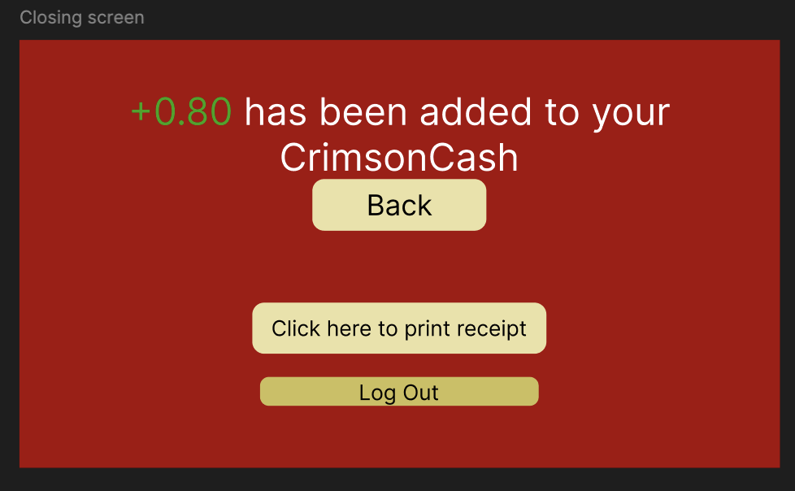

The problem
Students want to recycle, but they don't know what counts, and nothing rewards them for trying.
Most first-year students are living on their own for the first time. IU dorms have a recycling bin on every floor, but students:
- aren't sure what can be recycled, so they guess or give up,
- find sorting a hassle, so everything ends up in the trash, and
- see no reason to bother, because nothing rewards doing it right.
We set out to make recycling take the least possible effort, and to give students a reason to do it.
My role and the team
I led the team: setting the direction, running our meetings and organizing the work from first idea to final prototype.
- Gabrielle Roose (me)Team lead · direction, meetings and planning
- Kiersten ReedUser interviews and research
- Mathilde van DykResearch and the smart bin concept
- Janel SolieLocal recycling research and the rewards concept
- Setting the direction: I named the project and pitched building it into One.IU, so students could use it with the app they already have.
- Running the team: we met in person every Friday and on a quick Monday call to assign the week's tasks, with a shared agenda, Miro board and Figma file.
- Keeping it on track: I organized what had to happen from research to the final prototype, and moderated our first pilot user test.
We designed the screens together in class, in one shared Figma file.
Research
A survey of 18 students and 12 interviews showed a knowledge gap, and a clear motivator: money.
- students surveyed, most aged 19 to 22
- 18
- said they recycle regularly
- 7
- named money or rewards as a motivator
- 13
- said they're very confident about what's recyclable
- 1
Do you recycle?
Number of students, out of 18
| Yes | |
|---|---|
| Sometimes | |
| No |
How confident are you about what's recyclable?
1 = not at all, 5 = very confident
| 1 | |
|---|---|
| 2 | |
| 3 | |
| 4 | |
| 5 |
- Students guess: most rated their confidence a 3 or 4 out of 5, and interviewees assumed "paper and plastic" were fine and recycled about 5% of their waste.
- Access gets in the way: several students' apartments had no recycling at all, and several asked for more bins.
- Money motivates: 13 of 18 named cash, gift cards, coupons or points as what would get them to recycle more.
“Oftentimes I don't know what can and can't be recycled, so I just throw it in the trash.”
Interviewee, IU student
“If I knew which items can be recycled I would recycle them. But I don't. And I'm kind of lazy.”
Survey respondent
Synthesis

View our research board in Miro (opens in a new tab)
Personas
-
Dorm
Beth Harris
19 · IU marketing major · lives in Forest dorm
- Recycling access
- A recycling bin in her dorm room and a recycling room on each floor.
- Recycling habits
- Raised with strong composting and recycling habits; carefully considers her carbon footprint. Struggles because some people on her floor are putting trash in the recycling bin.
Core need: “Back home we have compost and recycling bins everywhere, but not in Bloomington.” -
Apartment
Josie Smith
18 · IU psychology major · lives in Union Street Apartments
- Recycling access
- Has access to recycling, but simply does not care; discards waste in the recycling bin when the trash can overflows.
- Recycling habits
- Throws everything away; believes everything goes to a landfill anyway.
Core need: “Unfortunately, I just throw stuff away.”
Ideas and iterations
Four rounds took us from a recycling map to an AI smart bin that pays you back.
- Sketches We brainwrote nine ideas, from a smart bin and a rewards card to my Crimson Thumb map-and-game app inside One.IU, then sketched the strongest three.
- Low-fidelity prototype In Figma we mocked up the phone flow and the bin. A heuristic evaluation found unlabeled cards, no way back and no running total.
- High-fidelity prototype We fixed those issues, then our critique pushed back: less focus on Apple Wallet, and how would the bin stop students from cheating? So we added a scanning tray where AI checks each item and rejects anything that isn't recyclable.
- User testing and final prototype Four student testers used the prototype, and their feedback shaped the final version below.


What we built
A smart bin on every dorm floor that checks each item and pays you back.
The bin's screens in our final prototype.

Testing
Four student testers changed the final design, and they agreed on what mattered.
Each tester played a freshman in Forest Quad with an empty Amazon box: recycle it at the bin on their floor, then check their Crimson Card balance. They thought aloud as they went.




| What testing showed | What we changed |
|---|---|
| Testers didn't understand why a paper cup earned less than a plastic one. | Added a pricing breakdown, so every amount is explained. |
| A paper receipt felt wasteful in a product about recycling. | Removed the receipt; the transaction lives on your Crimson Card. |
| Testers liked the crimson and cream colors and the large, clear buttons. | Kept them: it looks like an official IU tool. |

Testers also asked for an "Add new item" button, a history of past recycling and language options. Those went on the list for the next version.
Outcome
Four rounds of design and testing, from sketches to a tested prototype.
- A full visit, end to end: sign in with your Crimson Card or IU credentials, have each item checked by AI, see what you earned and why, and find it on your Crimson Card.
- Built for the real context: a bin in the recycling room on every dorm floor, using the card and app students already carry.
- Shared publicly: presented on Luddy's Zion showcase for INFO-I300, Fall 2024.
Reflection
Listen first, then design for the people who won't go out of their way.
- Don't pitch the solution in an interview. Our first interview guide asked about our app. Our associate instructor pointed out it would bias the answers, so we asked about habits instead, and learned far more.
- Critique keeps you honest. We spent a round perfecting Apple Wallet screens before feedback refocused us on the bin itself, where the real problem was.
- Small details carry your values. A paper receipt seemed harmless until testers pointed out it contradicted the whole idea.
Next: an "Add new item" button, a recycling history, language options, and a pilot bin in one dorm to test the cost and the AI check in real life.